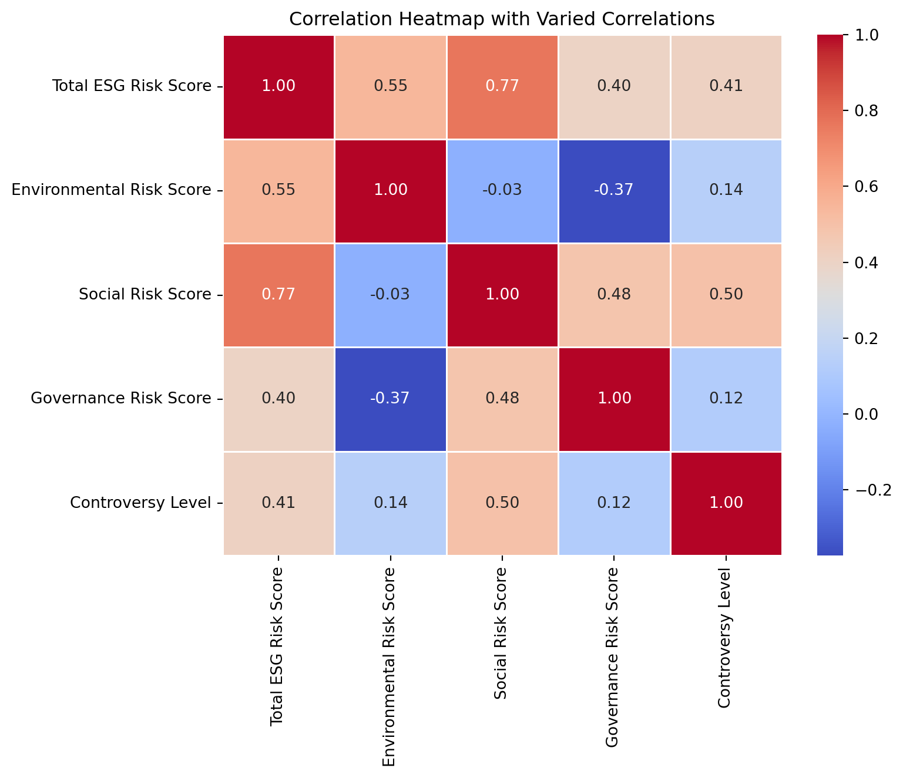
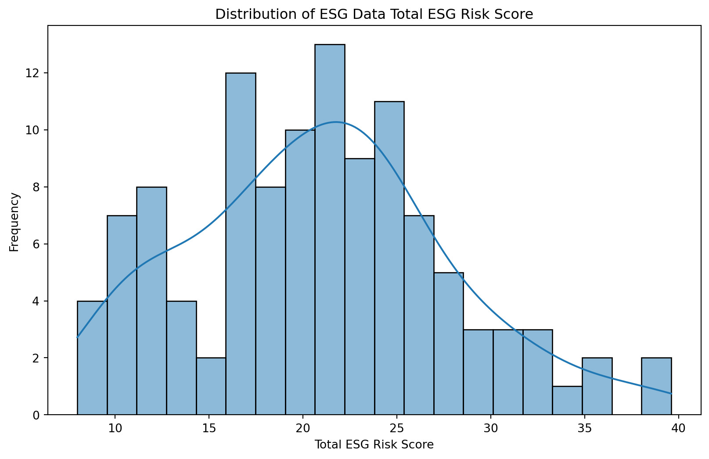
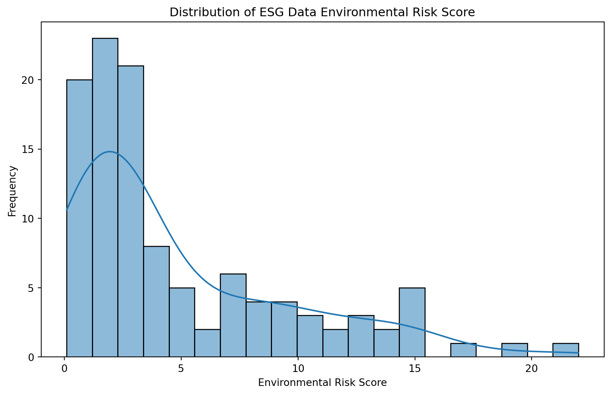
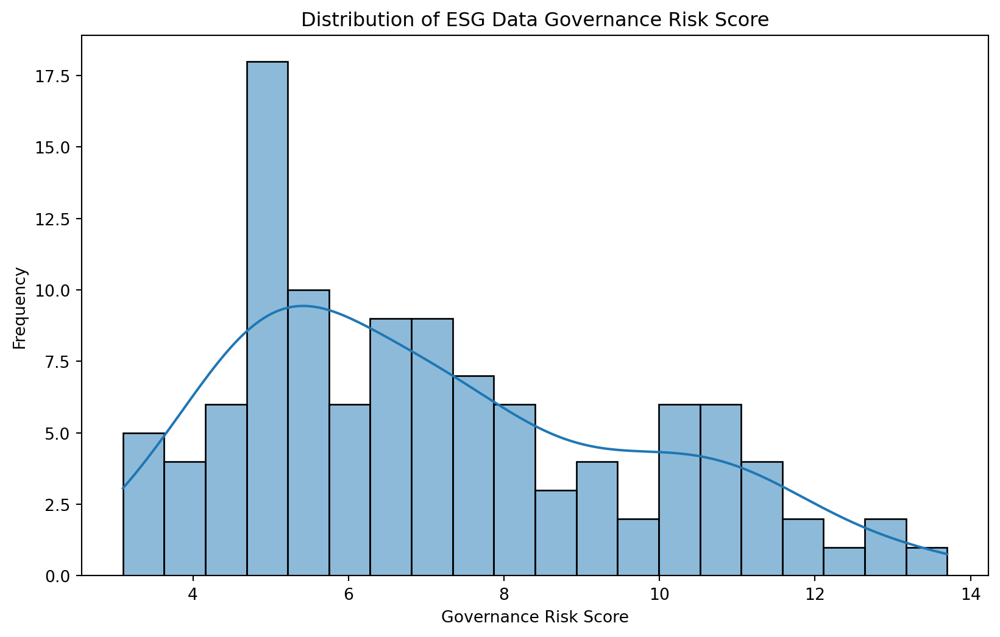
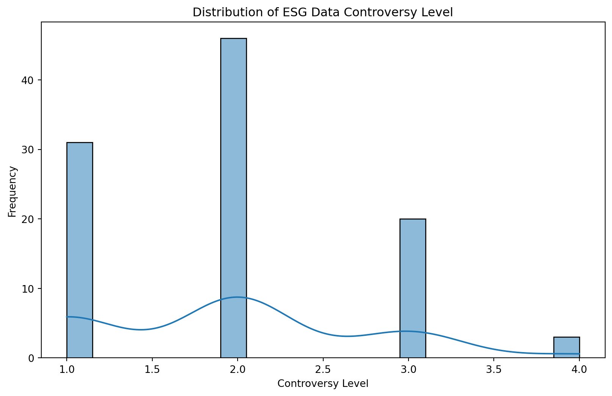
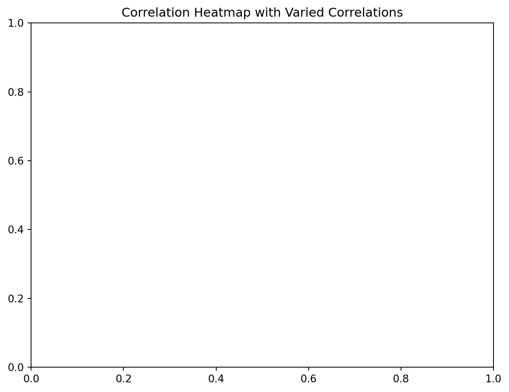

import pandas as pd
import seaborn as sns
import matplotlib.pyplot as plt
balance_sheet = pd.read_csv('yfinance-balance-sheet.csv')
stock_data = pd.read_csv('yfinance-history.csv')
esg_proj_data = pd.read_csv('esg_proj_data.csv')Analyzing ESG and Financial Data for Investment Decision Making
1 Introduction
ESG(Environmental, Social, and Governance) factors are increasingly being considered by investors for making informed investment decisions. Understanding the relationship between ESG metrics and financial performance can provide valuable insights into a company’s sustainability and long-term viability.
This project aims to analyze the relationship between ESG metrics and financial/accounting data to identify any correlations and trends that may exist. By doing so, we seek to provide investors with a better understanding of how ESG factors impact financial performance and assist them in making more sustainable investment decisions.
The project utilizes Python scripts to collect financial, accounting, and ESG data. The financial and accounting data is obtained using the yfinance library, while Selenium is employed to gather ESG data from the Sustainability Section of company webpages on Yahoo! Finance. ##Descripted Statistics ##Ungrouped Statistics for Balance Sheets
print(balance_sheet.describe()) Ordinary Shares Number Share Issued Net Debt Total Debt \
count 2.658000e+03 2.658000e+03 2.317000e+03 2.626000e+03
mean 6.405716e+08 7.568339e+08 1.291833e+10 1.922311e+10
std 1.296627e+09 1.442190e+09 2.240450e+10 4.221775e+10
min 3.167625e+06 9.589239e+06 2.200000e+07 1.404000e+06
25% 1.420809e+08 1.716074e+08 2.174900e+09 3.349737e+09
50% 2.720531e+08 3.142580e+08 5.714136e+09 7.261294e+09
75% 5.952015e+08 7.113500e+08 1.322700e+10 1.758525e+10
max 1.572341e+10 1.572341e+10 2.238890e+11 4.421400e+11
Tangible Book Value Invested Capital Working Capital \
count 2.659000e+03 2.658000e+03 2.314000e+03
mean 6.140413e+09 3.453963e+10 1.977094e+09
std 2.906924e+10 6.710119e+10 7.778440e+09
min -9.834700e+10 1.221960e+08 -4.443000e+10
25% -1.823000e+09 7.054684e+09 -2.506682e+08
50% 2.157460e+09 1.482450e+10 9.074155e+08
75% 8.880100e+09 3.350450e+10 2.709800e+09
max 2.636610e+11 7.488770e+11 9.313100e+10
Net Tangible Assets Capital Lease Obligations Common Stock Equity \
count 2.659000e+03 1.651000e+03 2.659000e+03
mean 6.475658e+09 1.730649e+09 1.661968e+10
std 3.034589e+10 5.731350e+09 3.221102e+10
min -9.834700e+10 -6.100000e+07 -1.723300e+10
25% -1.827950e+09 1.591580e+08 3.229000e+09
50% 2.120019e+09 3.918690e+08 7.500000e+09
75% 9.090150e+09 1.001500e+09 1.753100e+10
max 2.722630e+11 7.729700e+10 3.067370e+11
... Trading Securities Investmentsin Subsidiariesat Cost \
count ... 1.060000e+02 3.600000e+01
mean ... 8.437230e+10 2.777855e+09
std ... 1.371783e+11 3.849279e+09
min ... 0.000000e+00 0.000000e+00
25% ... 6.462450e+07 4.755000e+08
50% ... 1.174500e+09 1.388500e+09
75% ... 1.357220e+11 1.962875e+09
max ... 5.742130e+11 1.228100e+10
Total Partnership Capital Limited Partnership Capital \
count 1.000000e+01 1.000000e+01
mean 1.964380e+10 1.963130e+10
std 1.568801e+10 1.567458e+10
min 4.479000e+09 4.479000e+09
25% 4.826250e+09 4.826250e+09
50% 1.910150e+10 1.908800e+10
75% 3.345025e+10 3.343100e+10
max 3.668200e+10 3.665600e+10
Dueto Related Parties Non Current Duefrom Related Parties Non Current \
count 1.400000e+01 1.100000e+01
mean 9.710000e+08 1.903109e+07
std 8.538153e+08 4.242806e+07
min 5.000000e+06 0.000000e+00
25% 2.992500e+08 0.000000e+00
50% 6.075000e+08 1.805000e+06
75% 1.882750e+09 3.529500e+06
max 2.376000e+09 1.350000e+08
Fixed Assets Revaluation Reserve Current Deferred Taxes Liabilities \
count 3.000000e+00 2.000000e+00
mean 3.001667e+09 9.285000e+07
std 5.158336e+09 9.192388e+05
min 2.300000e+07 9.220000e+07
25% 2.350000e+07 9.252500e+07
50% 2.400000e+07 9.285000e+07
75% 4.491000e+09 9.317500e+07
max 8.958000e+09 9.350000e+07
Current Deferred Taxes Assets General Partnership Capital
count 5.000000e+00 5.0
mean 3.234000e+08 -2000000.0
std 6.618761e+07 0.0
min 2.550000e+08 -2000000.0
25% 2.820000e+08 -2000000.0
50% 3.100000e+08 -2000000.0
75% 3.440000e+08 -2000000.0
max 4.260000e+08 -2000000.0
[8 rows x 142 columns]Grouped stats for balance sheets
balance_sheet[['Total Assets','Total Debt']].describe()| Total Assets | Total Debt | |
|---|---|---|
| count | 2.659000e+03 | 2.626000e+03 |
| mean | 9.075012e+10 | 1.922311e+10 |
| std | 2.940459e+11 | 4.221775e+10 |
| min | 1.891360e+08 | 1.404000e+06 |
| 25% | 1.131355e+10 | 3.349737e+09 |
| 50% | 2.523760e+10 | 7.261294e+09 |
| 75% | 6.313150e+10 | 1.758525e+10 |
| max | 4.090727e+12 | 4.421400e+11 |
Y-finance stats ungrouped
print(stock_data.describe()) Open High Low Close \
count 197796.000000 197796.000000 197796.000000 197796.000000
mean 150.803107 152.401419 149.302798 150.909848
std 330.044562 333.614939 327.009474 330.419589
min 1.030000 1.060000 0.780000 0.980000
25% 40.990002 41.439999 40.509998 41.000000
50% 83.540001 84.449997 82.610001 83.599998
75% 157.000000 158.509995 155.539993 157.052502
max 8022.919922 8158.990234 8010.000000 8099.959961
Volume Dividends Stock Splits
count 1.977960e+05 197796.0 197796.0
mean 4.134482e+06 0.0 0.0
std 9.289442e+06 0.0 0.0
min 0.000000e+00 0.0 0.0
25% 8.323000e+05 0.0 0.0
50% 1.707600e+06 0.0 0.0
75% 3.854425e+06 0.0 0.0
max 3.160112e+08 0.0 0.0 Y-finance stats volume
stock_data['Volume'].describe()count 1.977960e+05
mean 4.134482e+06
std 9.289442e+06
min 0.000000e+00
25% 8.323000e+05
50% 1.707600e+06
75% 3.854425e+06
max 3.160112e+08
Name: Volume, dtype: float64ESG stats ungrouped
print(esg_proj_data.describe()) Total ESG Risk Score Environmental Risk Score Social Risk Score \
count 114.000000 111.000000 111.000000
mean 20.834211 4.845045 8.748649
std 6.922962 4.819237 4.165221
min 8.000000 0.100000 0.800000
25% 16.225000 1.500000 5.950000
50% 21.100000 2.500000 8.900000
75% 24.425000 7.350000 10.850000
max 39.600000 22.000000 22.500000
Governance Risk Score Controversy Level
count 111.000000 100.00000
mean 7.133333 1.95000
std 2.562078 0.79614
min 3.100000 1.00000
25% 5.050000 1.00000
50% 6.600000 2.00000
75% 8.950000 2.00000
max 13.700000 4.00000 Grouped
esg_proj_data['Total ESG Risk Score' ].describe()
esg_proj_data['Controversy Level'].describe()count 100.00000
mean 1.95000
std 0.79614
min 1.00000
25% 1.00000
50% 2.00000
75% 2.00000
max 4.00000
Name: Controversy Level, dtype: float64Heatmap
numeric_data = esg_proj_data.select_dtypes(include='number')
corr_matrix = numeric_data.corr()
plt.figure(figsize=(8, 6))
sns.heatmap(corr_matrix, annot=True, cmap='coolwarm', fmt=".2f", linewidths=.5)
plt.title('Correlation Heatmap with Varied Correlations')
plt.show()
Question 1
What is the distribution of closing prices for each company?
#stock_data = pd.read_csv('yfinance-history.csv')
# Convert 'Date' column to datetime format
#stock_data['Date'] = pd.to_datetime(stock_data['Date'])
# Filter data for the last year
#one_year_ago = pd.Timestamp.now() - pd.DateOffset(years=1)
#filtered_data = stock_data[stock_data['Date'] >= one_year_ago]
# Plot histogram for each company's closing prices
#plt.figure(figsize=(12, 8))
#sns.histplot(data=filtered_data, x='Close', h
#hue='ticker_symbol', bins=20, kde=True)
#plt.title('Distribution of Closing Prices for Each Company Over the Last Year')
#plt.xlabel('Closing Price')
#plt.ylabel('Frequency')
#plt.legend(title='Company')
#plt.show()
#This block was having render issues hence the #The graph reveals insights into the variability and central tendency of closing prices across different companies. Companies with narrower and taller peaks in their histograms exhibit closing prices concentrated around specific values, indicating less variability. Conversely, broader and flatter histograms suggest a wider range of closing prices and greater variability in stock performance.
Question 2
Whats the distribution of ESG score? And Which factor of ESG tends to cause the most risk?
def plot_distributions(df, title_prefix):
for col in df.select_dtypes(include=['float64', 'int64']).columns:
plt.figure(figsize=(10, 6))
sns.histplot(df[col].dropna(), bins=20, kde=True)
plt.title(f'Distribution of {title_prefix} {col}')
plt.xlabel(col)
plt.ylabel('Frequency')
plt.show()
# Plot distributions for ESG data
plot_distributions(esg_proj_data, 'ESG Data')




By visually inspecting the histograms, we can understand the distribution of ESG scores. The Environmental aspect of ESG causes companys the most risk.
Question 3
Which companies how the worst controversy level?
top_10_companies = esg_proj_data.sort_values(by='Total ESG Risk Score', ascending=False).head(10)
print(top_10_companies) Comapny Name Total ESG Risk Score \
64 The Boeing Company (BA) 39.6
44 APA Corporation (APA) 38.8
48 Antero Resources Corporation (AR) 36.4
102 Caterpillar Inc. (CAT) 36.2
53 Atmos Energy Corporation (ATO) 34.6
78 Bunge Global SA (BG) 32.9
52 Ashland Inc. (ASH) 32.4
12 Archer-Daniels-Midland Company (ADM) 31.8
79 Bausch Health Companies Inc. (BHC) 31.4
100 Conagra Brands, Inc. (CAG) 30.8
Environmental Risk Score Social Risk Score Governance Risk Score \
64 8.8 22.5 8.3
44 22.0 8.9 8.0
48 NaN NaN NaN
102 10.4 17.7 8.1
53 14.8 13.4 6.4
78 14.4 13.3 5.3
52 19.0 7.2 6.2
12 16.6 10.1 5.0
79 5.3 17.9 8.1
100 10.7 15.4 4.7
Controversy Level
64 4.0
44 2.0
48 1.0
102 4.0
53 2.0
78 3.0
52 2.0
12 3.0
79 3.0
100 2.0 Companies with the worst controversy level are companies that deal with heavy machinery. For example, Boeing and Caterpillar Inc., both have a controversy level of a 4.0 and are the worst out of the top ten companies. Boeing, which builds airplanes, and Caterpillar, which build cranes and other machinery, both fall into the same category. ## Question 4
How do the successful companies compare in terms of ESG Risk Score and Controversy Level?
df = (esg_proj_data
.sort_values(['Total ESG Risk Score', 'Controversy Level'])
[["Comapny Name", 'Comapny Name', 'Total ESG Risk Score', 'Controversy Level']]
.drop_duplicates(subset = 'Comapny Name')
)
df| Comapny Name | Comapny Name | Total ESG Risk Score | Controversy Level | |
|---|---|---|---|---|
| 105 | CBRE Group, Inc. (CBRE) | CBRE Group, Inc. (CBRE) | 8.0 | 1.0 |
| 56 | Avnet, Inc. (AVT) | Avnet, Inc. (AVT) | 8.2 | 2.0 |
| 111 | CDW Corporation (CDW) | CDW Corporation (CDW) | 9.2 | NaN |
| 51 | Arrow Electronics, Inc. (ARW) | Arrow Electronics, Inc. (ARW) | 9.4 | NaN |
| 54 | AvalonBay Communities, Inc. (AVB) | AvalonBay Communities, Inc. (AVB) | 9.8 | 1.0 |
| ... | ... | ... | ... | ... |
| 102 | Caterpillar Inc. (CAT) | Caterpillar Inc. (CAT) | 36.2 | 4.0 |
| 48 | Antero Resources Corporation (AR) | Antero Resources Corporation (AR) | 36.4 | 1.0 |
| 44 | APA Corporation (APA) | APA Corporation (APA) | 38.8 | 2.0 |
| 64 | The Boeing Company (BA) | The Boeing Company (BA) | 39.6 | 4.0 |
| 114 | NaN | NaN | NaN | NaN |
115 rows × 4 columns
Insight on Correlation Among Stock Close, ESG Risk Score, and Controversy Level
The heatmap analysis surprisingly reveals minimal correlation among a company’s stock Close value, ESG Risk Score, and Controversy Level. However, the strongest correlation is found between the ESG Risk Score and Controversy Level. This highlights the close link between sustainability metrics and controversies, suggesting that investors focused on ethical considerations should prioritize ESG ratings and associated controversies when making investment decisions.
Heatmap = esg_proj_data[[ 'Total ESG Risk Score', 'Controversy Level']].corr()
plt.figure(figsize=(8, 6))
#sns.heatmap(corr, annot=True, cmap='coolwarm', fmt=".2f", linewidths=.5)
# Title of the heatmap
plt.title('Correlation Heatmap with Varied Correlations')
# Display the heatmap
plt.show()
Conclusion
In this project, we conducted an analysis focusing on stock prices, Environmental, Social, and Governance (ESG) scores, controversy levels, and their correlations. Here’s a concise summary of our findings:
Closing Prices Distribution:
Histograms revealed variability in closing prices across companies. Narrow peaks indicate less variability, while broader ones suggest greater variability.
ESG Scores Distribution:
The Environmental aspect of ESG posed the most risk, as seen in the score distribution.
Companies with Worst Controversy Level:
Heavy machinery companies like Boeing and Caterpillar Inc. had the highest controversy levels, hinting at industry-specific trends.
Comparison of Successful Companies in ESG:
Successful companies showed varying ESG risk and controversy levels, emphasizing the need for sustainability in investment decisions.
Insight on Correlation:
While stock prices showed minimal correlation with ESG factors, a strong link was observed between ESG risk scores and controversy levels.
Conclusion:
Considering ESG factors alongside financial metrics is crucial for investors, as sustainability and controversies can significantly impact long-term performance. This analysis provides valuable insights for ethical investment decisions, highlighting the importance of integrating sustainability considerations into financial analysis. ## References
Collaboraters:Owen Ellick, Dylan Thody
ChatGPT Helped with errors and code
yahoo finance: https://finance.yahoo.com/